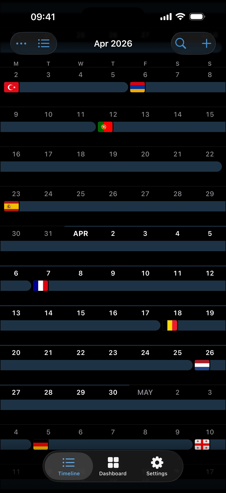
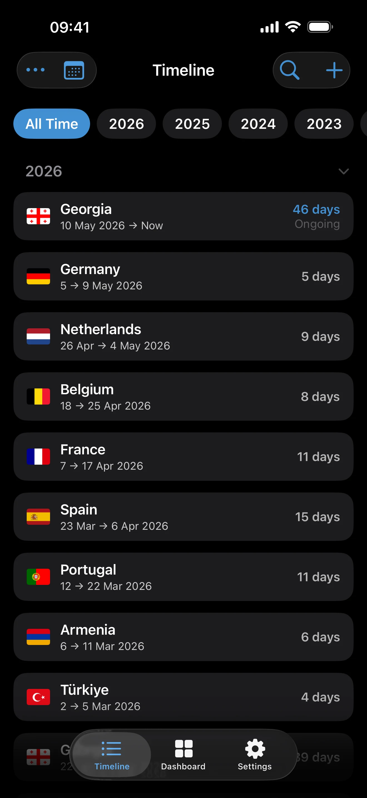
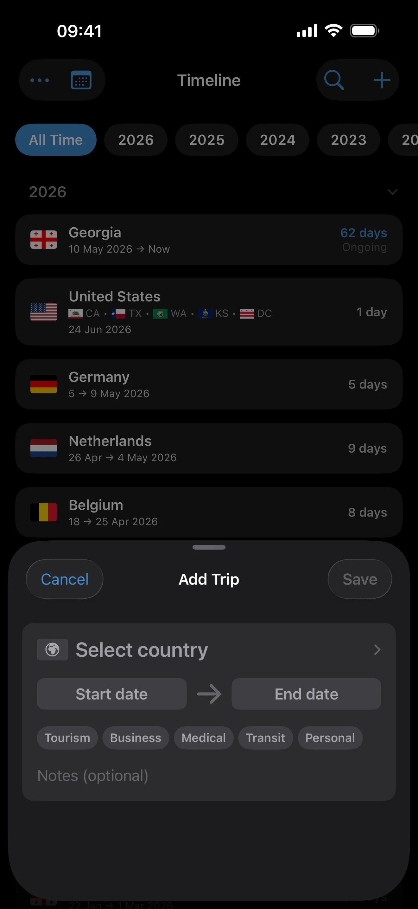
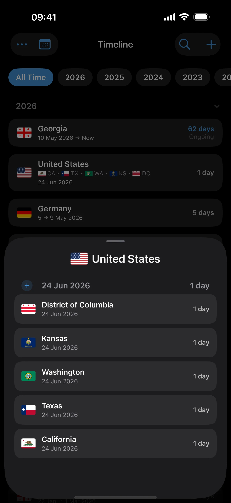

Timeline and Calendar
Last updated: July 10, 2026
Use List and Calendar mode, return to today, review suggestions, find photos, display US state stays, and resolve overlaps.
Timeline is your source record. Dashboard totals, trackers, maps, widgets, and exports are all derived from the trips shown here.
List or Calendar
Use the view control at the top of Timeline to switch between:
- List for trip cards grouped by time, including approximate and Unknown history.
- Calendar for a month-by-month view of Exact Dates trips. Tap a day to inspect the trips on that date or add a trip starting there.
When you have scrolled away from the current date, tap the Timeline tab again to return to today.


Adding and Editing Trips
Use the add button to create a trip, or tap a trip card to inspect and edit it. In Calendar mode, starting from a date pre-fills that date in the trip form. See Trip Modes and Record Quality before choosing Exact Dates, Year, Unknown, Transit, or an Open-ended trip.

Timeline Display Options
Open the Timeline menu for display and cleanup tools. Available choices depend on the current view:
- Sorting, Density, and expanded or collapsed Sections in List mode.
- Trip Colors by accent or continent in Calendar mode.
- Home Country visibility when a home country is configured.
- United States: Combined or By State for Pro users with state-tagged trips. Combined keeps a continuous US stay together; By State exposes each underlying state leg.

Auto-Detect Suggestions in Timeline
When Auto-Detect Trips notices a new place, its suggestion appears inline in Timeline. Tap it to review or edit the proposed trip, confirm it when correct, or ignore it. Ignoring a suggestion does not prevent you from adding the trip manually later.
Auto-Detect never creates a new trip without confirmation. It can, however, close an existing confirmed Open-ended trip when later detection proves you departed. See Privacy, Location, and Sync for the exact behavior and permissions.
Finding Photos for Existing Trips
Choose Find Photos… from the Timeline menu to match geotagged library photos to trips you already saved. This is different from Find Trips in Photos under Settings > Import, which creates draft trips from photo history. See Photo Import.
Overlaps and the Red Menu Indicator
If Timeline finds unresolved overlapping trips, the menu indicator turns red and offers Resolve overlap. Open it to inspect the records that share dates. A same-day border crossing can be legitimate because arrival and departure days both count, so review the chronology instead of deleting every shared date automatically.
Deleting and Undoing
Delete an individual trip from its available trip actions. AtlasDays offers a short undo window after deletion. For a whole mistaken Photo, CSV, or Flighty batch, use Settings > Manage Imports instead of deleting every trip one by one.
Where to go next
Trip Modes and Record Quality explains what each trip precision means.
Dashboard and Map explains how Timeline records become totals and highlights.
Privacy, Location, and Sync explains Auto-Detect and location permissions.